Setup Partner Gateway and Partner Web App (Optional) Before we start this section, close all the browser tabs except for this browser tab. This will help you navigate this section more easily. Since we’ve gone through the Design and Governance sections of the Mobile API, in this section we will skip the design section. We’ll also keep discussions to only essentials :) Publish Partner API to Service Registry If you don’t have a browser tab open with OpenShift Dev Spaces, click on {devspaces_dashboard}/dashboard/#/ide/devspaces-{user_name}/cloud-architecture-workshop[Dev Spaces IDE^, window="devspaces"]. If needed login with your username and password ({user_name}/{user_password}). In Dev Spaces, navigate to the folder module-apim → partner → activedoc, and open the file partner-activedoc-draft.json. Or type [Ctrl+P] and type the file name as partner-activedoc-draft.json Scroll to the bottom of the page where you can see the securitySchemes section 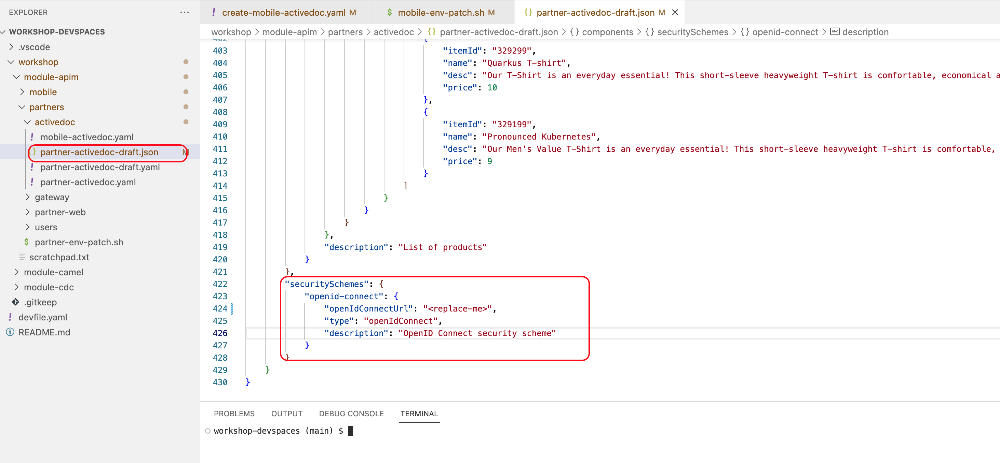 Figure 1. Partner OpenAPI Security Schemes section Substitute <replace-me> with the Red Hat SSO’s OpenID Provider Configuration shown below https://sso.{openshift_subdomain}/auth/realms/globex/.well-known/openid-configuration 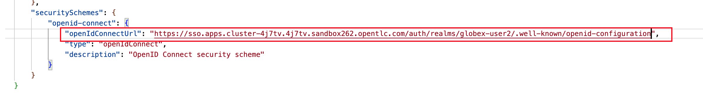 Figure 2. Updated Security Scheme Execute the following command from the Dev Spaces' Terminal. This command makes a POST to the Service Registry API to create an OpenAPI schema for Partner Gateway API. curl -X POST -H "Content-type: application/json; artifactType=OPENAPI" -H "X-Registry-ArtifactId: partnerapi" -d @/projects/workshop-devspaces/workshop/module-apim/partners/activedoc/partner-activedoc-draft.json {service_registry_url}/apis/registry/v2/groups/globex/artifacts The following JSON is returned back by Service Registry confirming creation Output response from Service Registry {"name":"Globex Partners API Gateway","description":"Globex APIs made accessible to global partners to view Globex's catalog and products","createdBy":"","createdOn":"2023-05-05T22:51:01+0000","modifiedBy":"","modifiedOn":"2023-05-05T22:51:01+0000","id":"partnerapi","version":"1","type":"OPENAPI","globalId":2,"state":"ENABLED","groupId":"globex","contentId":2,"references":[]}workshop-devspaces (main) You can view the newly created OpenAPI specification {service_registry_url}/ui/artifacts/globex/partnerapi/versions/latest[here^, window="serviceregistry"] You can close the Service Registry browser tab. Create Backend, Products, ActiveDoc and Users for Partner Gateway Create Backend In Dev Spaces , under the folder module-apim → partners → gateway, open the file partner-gateway-backend.yaml Substitute "<replace-me>" with the Service endpoint of the Globex Partner gateway service appended with the port as :8080. This URL is given below http://globex-partner-gateway.globex-apim-{user_name}.svc.cluster.local:8080 After substitution the partner-gateway-backend.yaml file should looks like 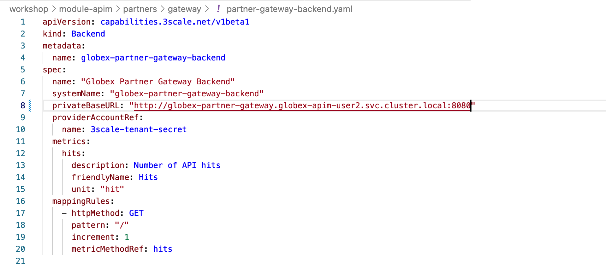 Figure 3. partner-gateway-backend file Run the following command which will create a Partner Gateway Backend in 3scale. oc apply -f /projects/workshop-devspaces/workshop/module-apim/partners/gateway/partner-gateway-backend.yaml -n globex-apim-{user_name} backend.capabilities.3scale.net/globex-partner-gateway-backend created Create Products In Dev Spaces , under the folder module-apim → partners → gateway, open the file partner-gateway-product.yaml 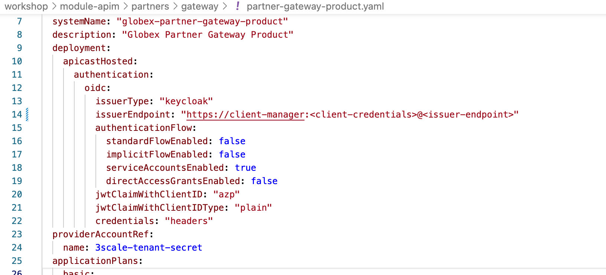 Figure 4. partner-gateway-product.yaml file Get the value for <client-credentials> placeholder as described below. Or if you have copied this into Scratchpad you can use that instead. Open the {sso_tenant_console}/#/realms/globex/clients[SSO Clients List^, window="sso"] from Red Hat SSO. Login if needed with ({user_name}/{user_password}). In case you see an error stating You don’t have access to the requested resource, you may notice that you are logged in as a user other than {user_name} Click on Sign Out and close the browser Reopen the {sso_tenant_console}/#/realms/globex/clients[Red Hat SSO Clients List^, window="sso"]. Login as ({user_name}/{user_password}). 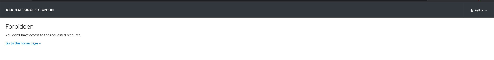 Figure 5. Red Hat SSO Login error Click on the Client ID client-manager. You can copy the credentials from the Credentials tab 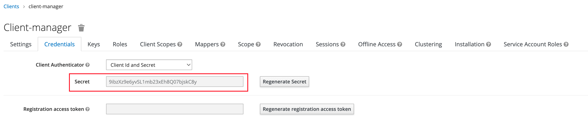 Figure 6. client_manager credentials In the partner-gateway-product.yaml file, in Dev Spaces, substitute the following values Substitute <client-credentials> with the Secret from the Client ID client-manager from the previous step Substitute <issuerEndpoint> with the following value sso.{openshift_subdomain}/auth/realms/globex The file partner-gateway-product.yaml looks like this now. 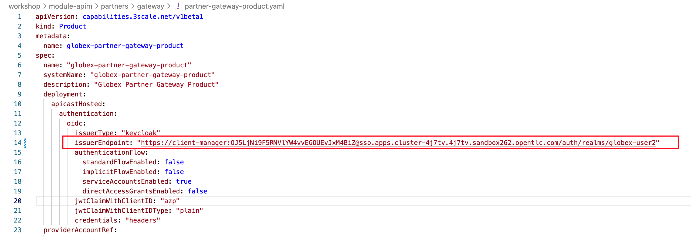 Run the following command in the Dev Spaces Terminal to create the product oc apply -f /projects/workshop-devspaces/workshop/module-apim/partners/gateway/partner-gateway-product.yaml -n globex-apim-{user_name} Output product.capabilities.3scale.net/globex-partner-gateway-product created Create Active Doc for Partner Gateway In Dev Spaces, navigate to the folder module-apim → partners → activedoc, open the file create-partner-activedoc.yaml 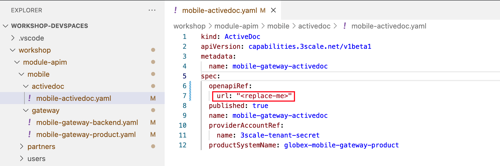 Replace the <replace-me> placeholder with the Service Registry OpenAPI endpoint for Partner API show below {service_registry_url}/apis/registry/v2/groups/globex/artifacts/partnerapi Create this Active Doc by running the following command in the Dev Spaces Terminal oc apply -f /projects/workshop-devspaces/workshop/module-apim/partners/activedoc/create-partner-activedoc.yaml -n globex-apim-{user_name} Output activedoc.capabilities.3scale.net/partner-gateway-activedoc created Setup Partner users Create this Active Doc by running the following command in the Dev Spaces Terminal oc apply -f /projects/workshop-devspaces/workshop/module-apim/partners/users/partner-dev-setup.yaml -n globex-apim-{user_name} Output secret/partner.secret created developeraccount.capabilities.3scale.net/partner-developeraccount created developeruser.capabilities.3scale.net/admin.partner created developeruser.capabilities.3scale.net/user.partner created Configurations on 3scale admin console Navigate to the {3scale_tenant}[3scale admin portal^, window="3scale"] and login using your username and password ({user_name}/{user_password}). 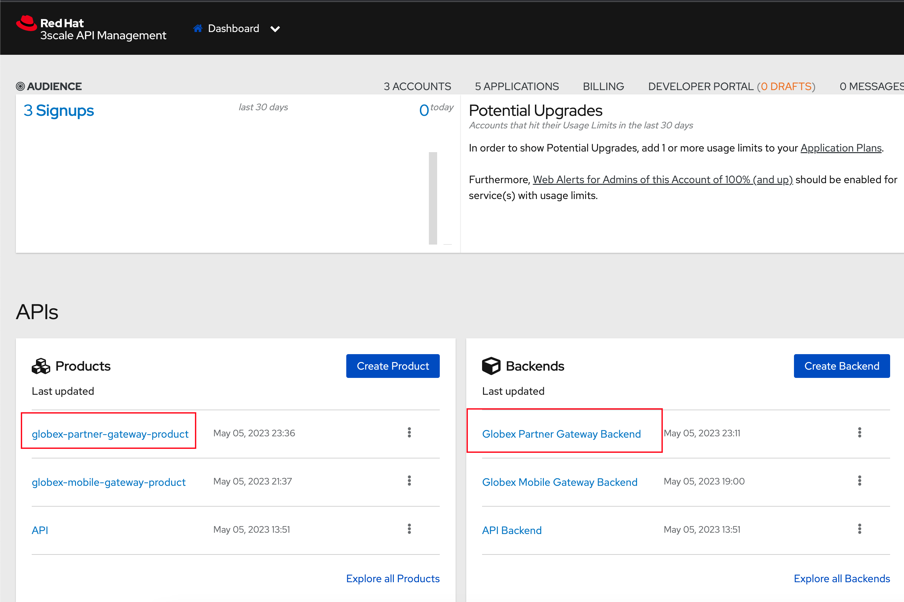 Figure 7. Launch 3scale You will notice that the Partner Product and Backend have been created. Click on globex-partner-gateway-product under APIs → Products section. You are presented with the Product overview page for the Partner API Product you created. Navigate to Integration → Configuration and click on the Promote to v.x Staging APICast and then Promote to v.x Production APICast to promote all the config changes 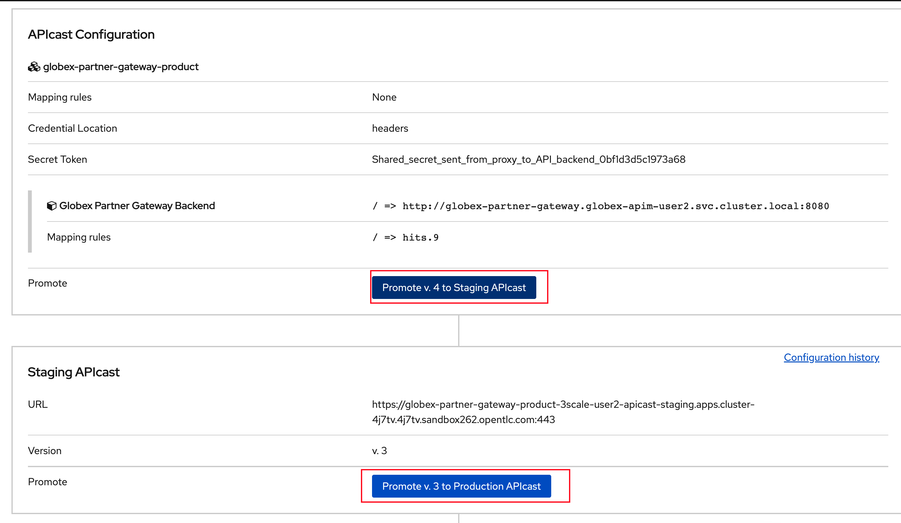 Figure 8. Promote Staging and Production APICast Signup for an application as a Partner Navigate to the Developer Portal {globex_developer_portal}[Globex Developer Portal^, window="devportal"] If you are already signed in, clicking on the Exit option on top-right of the page. 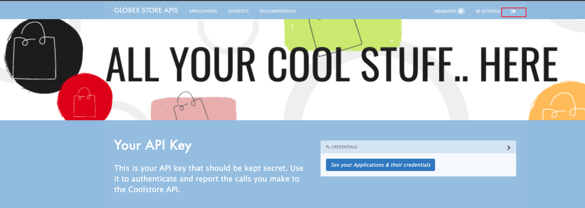 Figure 9. Logout if already signed in Click on SIGN IN on top right of the page and login using username and password as (user.partner/openshift) Navigate to Applications Listing by choosing the APPLICATIONS menu on the top of the page. 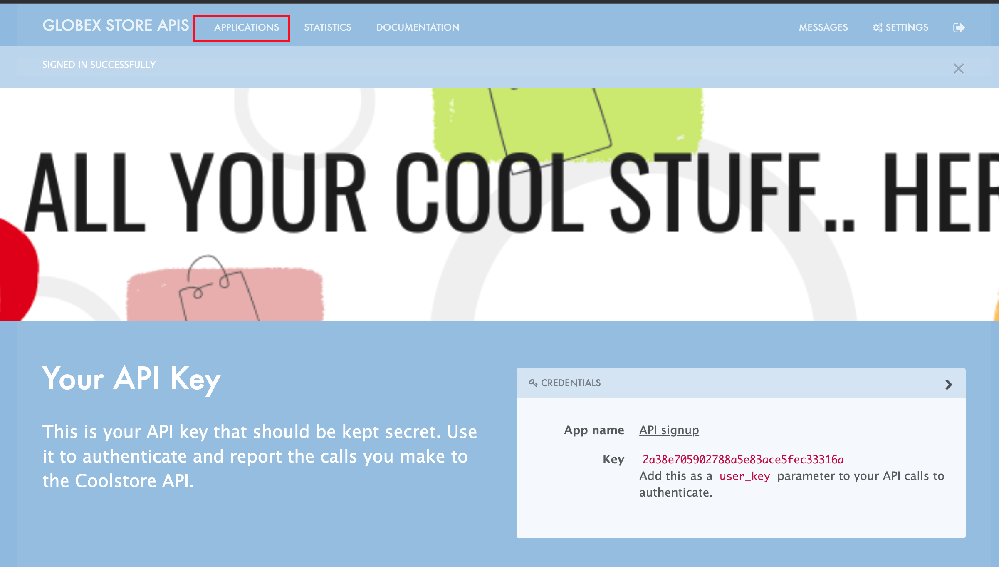 Figure 10. Developer Portal Landing Page In the Applications page you are invited to Create Application. Click on the Create new application button seen against globex-partner-gateway-product 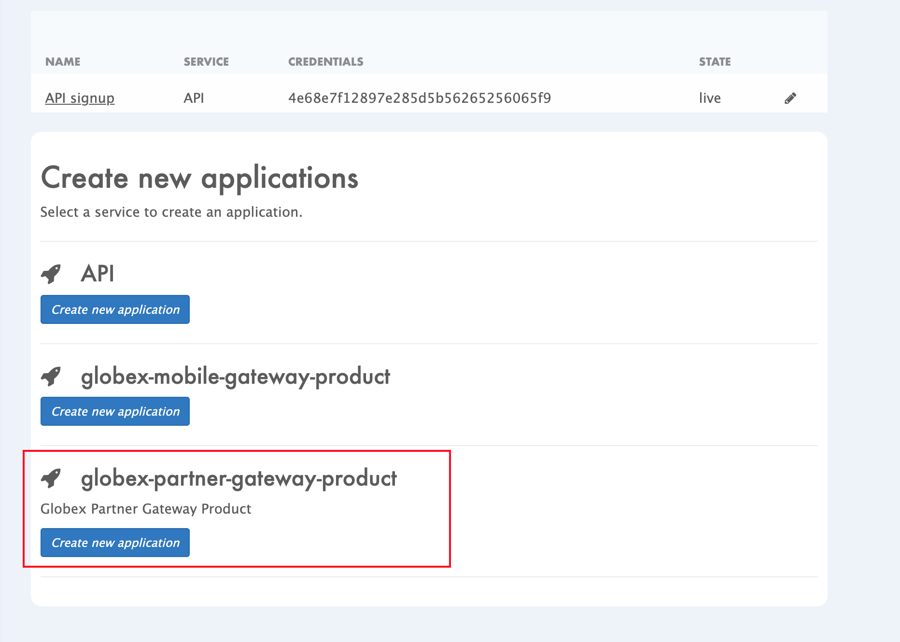 Figure 11. Developer Portal: Create new application Click on Subscribe to globex-partner-gateway-product link 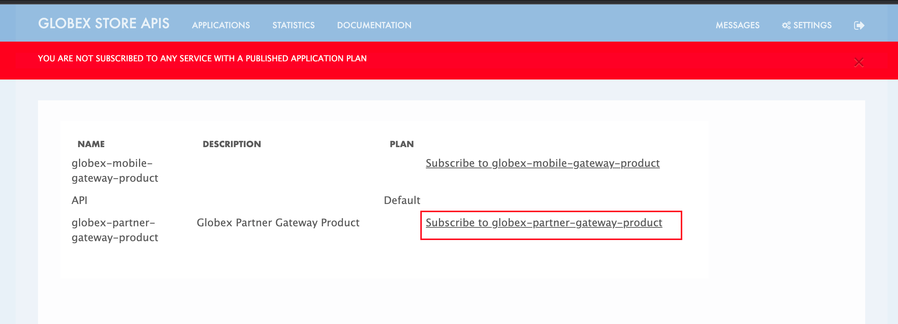 Figure 12. Subscribe to globex-mobile-gateway-product You are successfully subscribed to the service 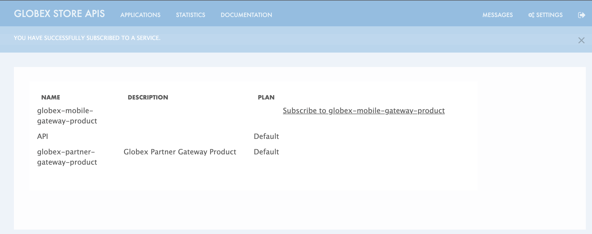 Figure 13. Successfully subscribed to the service Navigate back to the APPLICATIONS tab via the top menu. Under globex-partner-gateway-product, click on the Create new application button 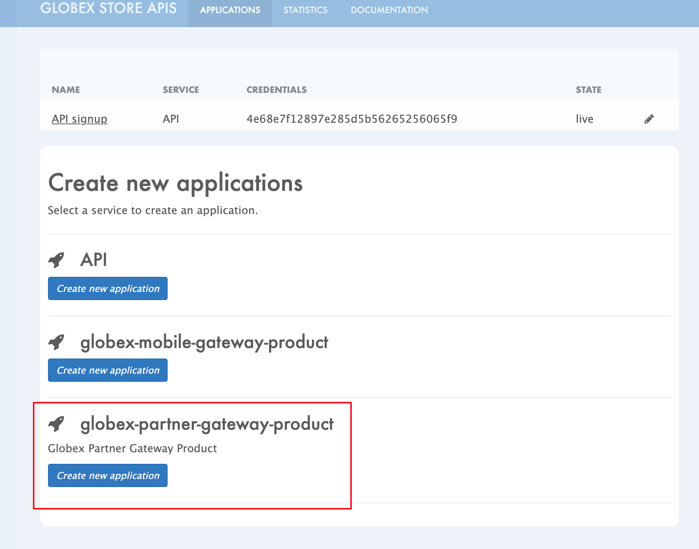 Figure 14. Developer Portal: Create new application (again) In the NEW APPLICATION page, give the plan a Name and a Description and click on Create Application. 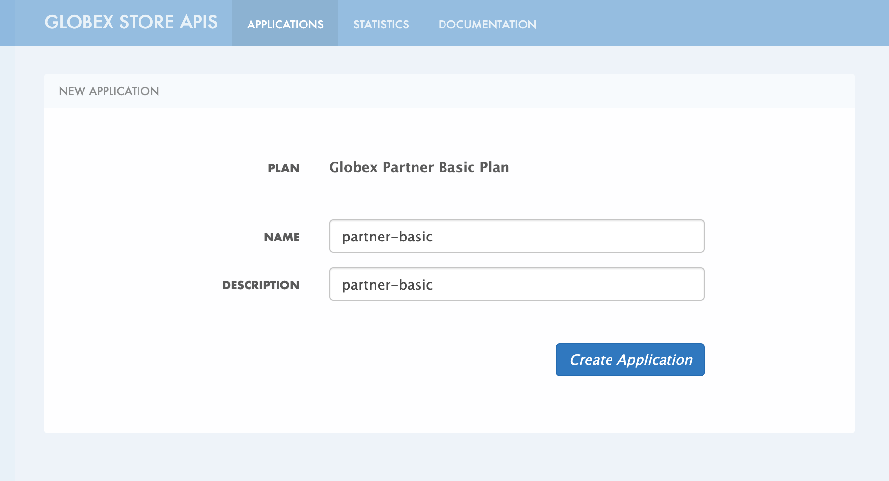 Figure 15. Developer Portal: New application An application is created successfully. Make a note of the Client ID and Client Secret. You will be using this in the Partner Web Portal setup. Enter the value asterisk (*) in the REDIRECT URL field and click on the Submit button. This is to setup the right Redirect URL for OAuth using Red Hat SSO 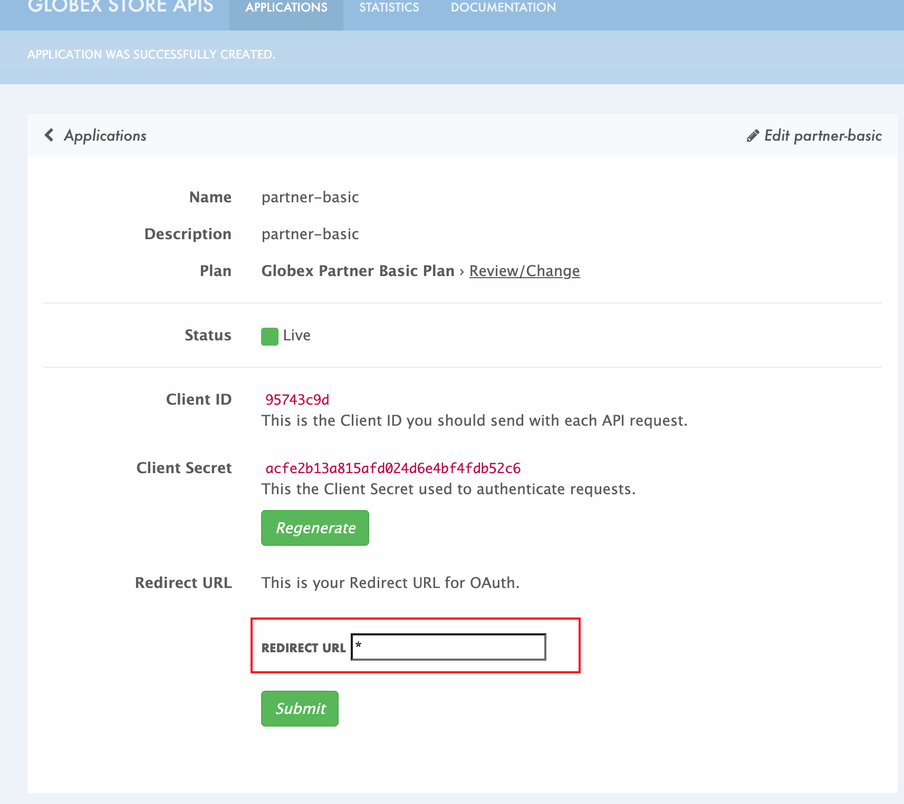 Figure 16. Update REDIRECT URL in the Application creates successfully for Partner User Setup Partner Web Portal In the previous section, you signed up for access as a Partner Developer and gained credentials to access the APIs Globex exposes. To update the Partner Web application you need these values Client ID & Client Secret - Needs to be fetched from Red Hat SSO Token URL - From Red Hat SSO - But available here in the instructions Globex API Endpoint - From Red Hat 3scale - But available here in the instructions These values are part of {openshift_cluster_console}/k8s/ns/globex-apim-{user_name}/deployments/globex-partner-web/environment[globex-partner-web deployment, window="console"] and are highlighted in the screenshot below 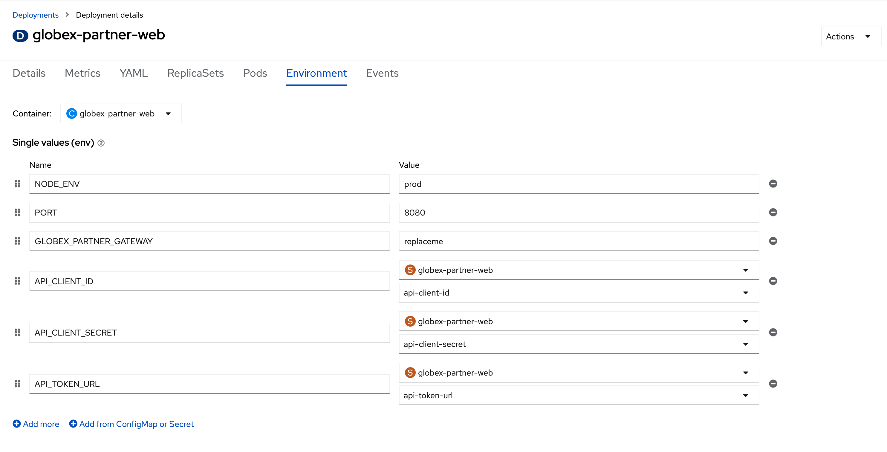 Figure 17. globex-partner-web Deployment The Client ID and Client Secret with values as placeholders are predeployed as a Kubernetes Secret called secret.yaml. In the Dev workspace, under the folder /projects/workshop-devspaces/workshop/module-apim/partners/partner-web open the file secret.yaml 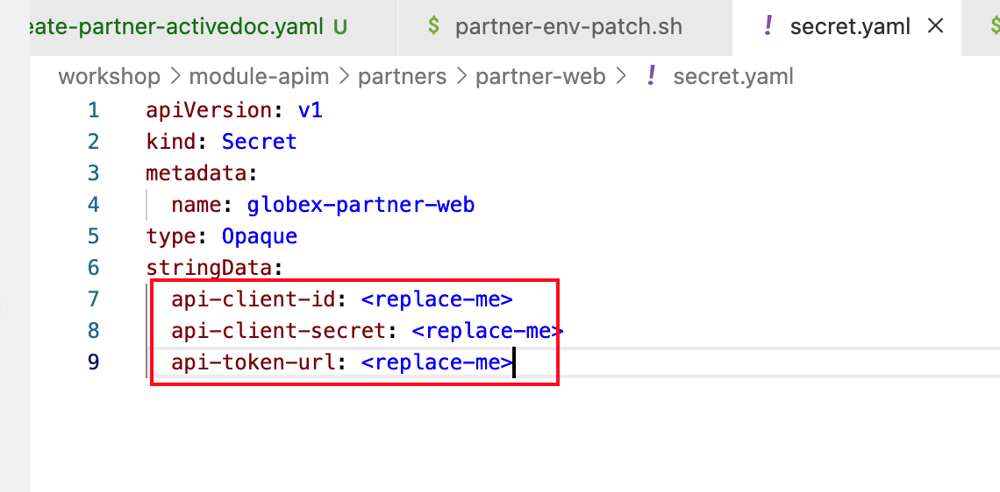 Figure 18. secret.yaml Update the Client ID and Client Secret from the previous step on 3scale Developer Portal 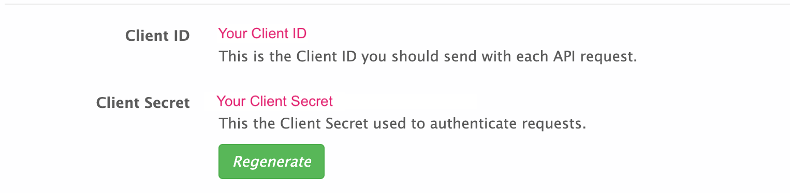 Figure 19. Client ID and Client Secret from 3scale Developer Portal Update Token URL with the following value https://sso.{openshift_subdomain}/auth/realms/globex/protocol/openid-connect/token In the Dev Spaces Terminal apply changes made to the secret.yaml by running the following command oc apply -f /projects/workshop-devspaces/workshop/module-apim/partners/partner-web/secret.yaml -n globex-apim-{user_name} Output secret/globex-partner-web configured The final step is to patch the Partner Web portal with the Partner Gateway API endpoint. You would ideally get this from 3scale. But since you have learnt how to do this with Mobile API, we will skip navigating to 3scale to save some time. Execute this script in the Dev Spaces Terminal oc set env deployments/globex-partner-web --overwrite GLOBEX_PARTNER_GATEWAY=https://globex-partner-gateway-product-3scale-{user_name}-apicast-production.{openshift_subdomain} Output deployment.apps/globex-partner-web updated [Click to learn] How do I verify what I just did? Test Partner Web Application In the previous section, you signed up for access as a Partner Developer and gained credentials to access the Globex PArtner Gateway API. You also setup the necessary configurations for the Partner Web Application. Launch the Globex Partner Web 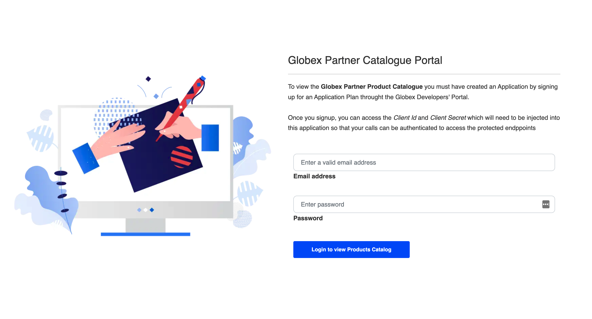 Figure 20. Partner Web Portal Login using username/password as (partner/openshift). It is notable that the partner users are not managed using Red Hat SSO. After logging in, the entire product list is shown in a paginated format. Allow a few seconds for the catalogue to load Reload this page by hitting the Browser Refresh a few times which will help us to generate some analytics. 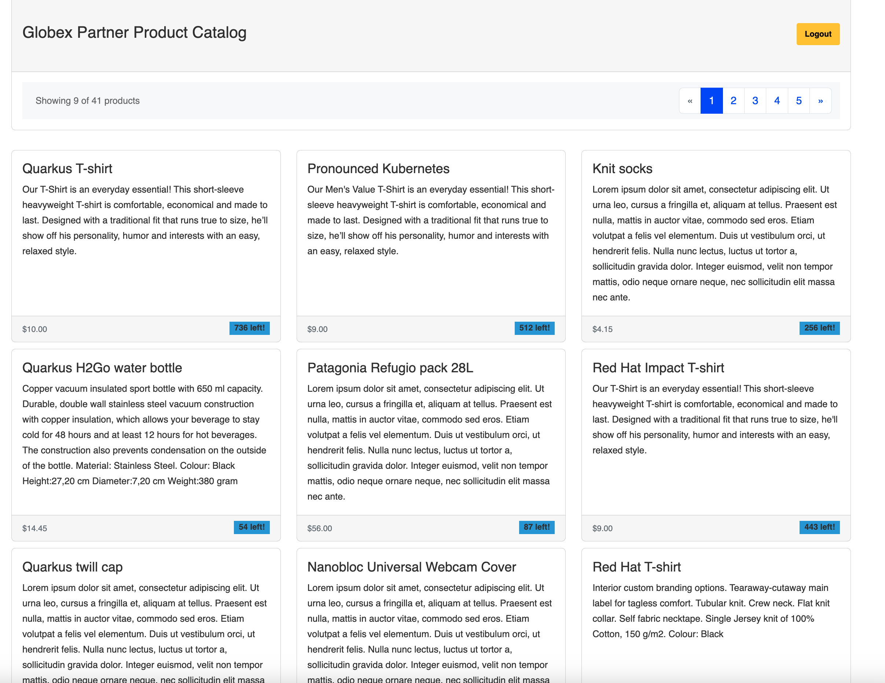 Figure 21. User logged in and can view paginated products Analytics Navigate to the {globex_developer_portal}/buyer/stats[Globex Developer Portal Statistics^, window="devportal"] From the dropdown indicated in this screenshot, choose the Partner Gateway API’s application plan (which is partner-basic in this case). You will be presented with the statistics graph of the calls made to this gateway by the Partner Developer’s access. 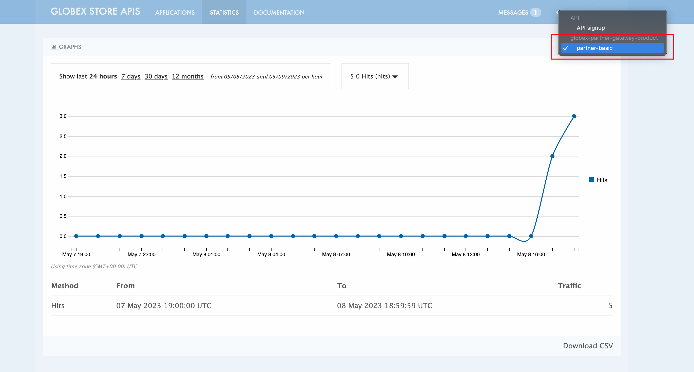 Under the hood As part of this Section you setup and tested the Partner Web App. The user partner that you logged into the Partner App as, is not authenticated using Red Hat SSO. In fact it is not authenticated at all. This is because the way partners handle user authentication is not something that Globex is concerned about at all. In this scenario we use Client Credentials authentication, because the backend NodeJS server authenticates itself with Client ID and Credentials obtained by the Partner Developer while signing up for an Application via 3scale Developer Portal The token generated by NodeJS is then exchanged with 3scale to ensure the Client ID indeed has access to that particular API